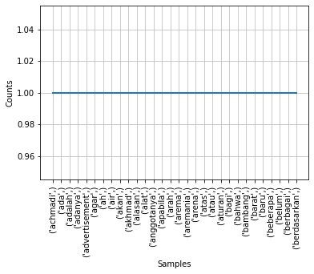

TEXT SUMMARY
TEXT SUMMARY#
import requests
import pandas as pd
from bs4 import BeautifulSoup as bs
URL = "https://news.detik.com/berita/d-6334129/5-fakta-baru-tragedi-kanjuruhan-6-tersangka-hingga-soal-gas-air-mata?single=1"
resp = requests.get(URL)
soup = bs(resp.text, "lxml")
elements = soup.find("div", attrs={"class":"detail__body-text itp_bodycontent"}).find_all('p')
dokumen = []
split_kalimat = []
for i,paragraf in enumerate(elements):
dokumen.append(paragraf.text)
# print(kalimat)
for j,kalimat in enumerate(dokumen[i].split(".")):
# print(len(kalimat))
if len(kalimat) == 0:
continue
else:
split_kalimat.append(kalimat)
def preprocessing(kalimat):
import re
res_kata = []
for j,kata in enumerate(kalimat.split(" ")):
kata = kata.lower()
kata = kata.replace(",", "")
kata = kata.replace("\r\n","")
kata = kata.replace("\"","")
kata = ''.join(re.sub("[0-9]","",kata))
if len(kata) > 0:
res_kata.append(kata)
text = list(res_kata)
# print(text)
return text
df = pd.DataFrame(split_kalimat,columns=['kata'])
df['kata'].apply(preprocessing).to_csv("preprocessing_summary.csv")
data = pd.read_csv("preprocessing_summary.csv")
data
| Unnamed: 0 | kata | |
|---|---|---|
| 0 | 0 | ['fakta-fakta', 'baru', 'terkait', 'tragedi', ... |
| 1 | 1 | ['mulai', 'dari', 'ada', 'enam', 'tersangka', ... |
| 2 | 2 | ['berikut', 'fakta', 'terbaru', 'tragedi', 'ka... |
| 3 | 3 | ['kapolri', 'jenderal', 'listyo', 'sigit', 'pr... |
| 4 | 4 | ['direktur', 'utama', 'pt', 'lib', 'akhmad', '... |
| 5 | 5 | ['advertisement'] |
| 6 | 6 | ['scroll', 'to', 'resume', 'content'] |
| 7 | 7 | ['berdasarkan', 'gelar', 'dan', 'alat', 'bukti... |
| 8 | 8 | ['lima', 'tersangka', 'lainnya', 'ialah', 'kab... |
| 9 | 9 | ['kapolri', 'menyebut', 'pt', 'liga', 'indones... |
| 10 | 10 | ['verifikasi', 'stadion', 'dilakukan', 'pada',... |
| 11 | 11 | ['kita', 'melakukan', 'olah', 'tkp'] |
| 12 | 12 | ['berdasarkan', 'hasil', 'pendalaman', 'ditemu... |
| 13 | 13 | ['sigit', 'menyebut', 'verifikasi', 'terakhir'... |
| 14 | 14 | ['catatan', 'terkait', 'kanjuruhan', 'katanya'... |
| 15 | 15 | ['verifikasi', 'terakhir', 'dilakukan', 'pada'... |
| 16 | 16 | ['sigit', 'menyebut', 'verifikasi', 'kanjuruha... |
| 17 | 17 | ['dia', 'menyatakan', 'tak', 'ada', 'perbaikan... |
| 18 | 18 | ['di', 'tahun', 'tidak', 'dikeluarkan', 'verif... |
| 19 | 19 | ['dia', 'juga', 'menyebut', 'tim', 'menemukan'... |
| 20 | 20 | ['padahal', 'kata', 'sigit', 'penonton', 'yang... |
| 21 | 21 | ['tentunya', 'kelalaian', 'tersebut', 'menimbu... |
| 22 | 22 | ['jenderal', 'sigit', 'menyebut', 'ada', 'sebe... |
| 23 | 23 | ['sigit', 'menyebut', 'tembakan', 'gas', 'air'... |
| 24 | 24 | ['dengan', 'semakin', 'bertambahnya', 'penonto... |
| 25 | 25 | ['terdapat', 'sebelas', 'personel', 'yang', 't... |
| 26 | 26 | ['dari', 'sebelas', 'tembakan', 'itu', 'kata',... |
| 27 | 27 | ['tembakan', 'inilah', 'yang', 'kemudian', 'me... |
| 28 | 28 | ['ke', 'tribun', 'selatan', 'kurang', 'lebih',... |
| 29 | 29 | ['tentu', 'lah', 'ini', 'yang', 'kemudian', 'm... |
| 30 | 30 | ['sigit', 'menyebut', 'alasan', 'personel', 'p... |
| 31 | 31 | ['dia', 'mengatakan', 'keputusan', 'ini', 'dil... |
| 32 | 32 | ['di', 'satu', 'sisi', 'tembakan', 'tersebut',... |
| 33 | 33 | ['simak', 'berita', 'selengkapnya', 'di', 'hal... |
| 34 | 34 | ['simak', 'video:', 'yang', 'diketahui', 'seja... |
| 35 | 35 | ['[gambas:video', 'detik]'] |
| 36 | 36 | ['jenderal', 'sigit', 'juga', 'mengumumkan', '... |
| 37 | 37 | ['salah', 'satu', 'yang', 'ditetapkan', 'tersa... |
| 38 | 38 | ['wahyu', 'disebut', 'mengetahui', 'terkait', ... |
| 39 | 39 | ['selain', 'itu', 'danki', 'brimob', 'polda', ... |
| 40 | 40 | ['kemudian', 'saudara', 'h', 'brimob', 'polda'... |
| 41 | 41 | ['kasat', 'samapta', 'polres', 'malang', 'bamb... |
| 42 | 42 | ['dia', 'juga', 'memerintahkan', 'anggotanya',... |
| 43 | 43 | ['kasat', 'samapta', 'polres', 'malang', 'pida... |
| 44 | 44 | ['kapolri', 'mengatakan', 'panitia', 'pertandi... |
| 45 | 45 | ['wib'] |
| 46 | 46 | ['kemudian', 'polres', 'menanggapi', 'surat', ... |
| 47 | 47 | ['waktu', 'indonesia', 'barat', 'dengan', 'per... |
| 48 | 48 | ['namun', 'demikian', 'permintaan', 'tersebut'... |
| 49 | 49 | ['setelah', 'itu', 'polres', 'malang', 'melaku... |
| 50 | 50 | ['personel', 'pengamanan', 'pun', 'ditambah', ... |
| 51 | 51 | ['oleh', 'karena', 'itu', 'kemudian', 'kapolre... |
| 52 | 52 | ['personel', 'menjadi'] |
| 53 | 53 | ['personel'] |
| 54 | 54 | ['khusus', 'untuk', 'suporter', 'yang', 'hadir... |
from sklearn.feature_extraction.text import TfidfTransformer, TfidfVectorizer, CountVectorizer
dataTextPre = pd.read_csv('preprocessing.csv')
vectorizer = CountVectorizer(min_df=1)
bag = vectorizer.fit_transform(dataTextPre['kata'])
---------------------------------------------------------------------------
FileNotFoundError Traceback (most recent call last)
C:\Users\MNURFA~1\AppData\Local\Temp/ipykernel_28084/2494642276.py in <module>
1 from sklearn.feature_extraction.text import TfidfTransformer, TfidfVectorizer, CountVectorizer
----> 2 dataTextPre = pd.read_csv('preprocessing.csv')
3 vectorizer = CountVectorizer(min_df=1)
4 bag = vectorizer.fit_transform(dataTextPre['kata'])
~\AppData\Local\Programs\Python\Python39\lib\site-packages\pandas\util\_decorators.py in wrapper(*args, **kwargs)
309 stacklevel=stacklevel,
310 )
--> 311 return func(*args, **kwargs)
312
313 return wrapper
~\AppData\Local\Programs\Python\Python39\lib\site-packages\pandas\io\parsers\readers.py in read_csv(filepath_or_buffer, sep, delimiter, header, names, index_col, usecols, squeeze, prefix, mangle_dupe_cols, dtype, engine, converters, true_values, false_values, skipinitialspace, skiprows, skipfooter, nrows, na_values, keep_default_na, na_filter, verbose, skip_blank_lines, parse_dates, infer_datetime_format, keep_date_col, date_parser, dayfirst, cache_dates, iterator, chunksize, compression, thousands, decimal, lineterminator, quotechar, quoting, doublequote, escapechar, comment, encoding, encoding_errors, dialect, error_bad_lines, warn_bad_lines, on_bad_lines, delim_whitespace, low_memory, memory_map, float_precision, storage_options)
584 kwds.update(kwds_defaults)
585
--> 586 return _read(filepath_or_buffer, kwds)
587
588
~\AppData\Local\Programs\Python\Python39\lib\site-packages\pandas\io\parsers\readers.py in _read(filepath_or_buffer, kwds)
480
481 # Create the parser.
--> 482 parser = TextFileReader(filepath_or_buffer, **kwds)
483
484 if chunksize or iterator:
~\AppData\Local\Programs\Python\Python39\lib\site-packages\pandas\io\parsers\readers.py in __init__(self, f, engine, **kwds)
809 self.options["has_index_names"] = kwds["has_index_names"]
810
--> 811 self._engine = self._make_engine(self.engine)
812
813 def close(self):
~\AppData\Local\Programs\Python\Python39\lib\site-packages\pandas\io\parsers\readers.py in _make_engine(self, engine)
1038 )
1039 # error: Too many arguments for "ParserBase"
-> 1040 return mapping[engine](self.f, **self.options) # type: ignore[call-arg]
1041
1042 def _failover_to_python(self):
~\AppData\Local\Programs\Python\Python39\lib\site-packages\pandas\io\parsers\c_parser_wrapper.py in __init__(self, src, **kwds)
49
50 # open handles
---> 51 self._open_handles(src, kwds)
52 assert self.handles is not None
53
~\AppData\Local\Programs\Python\Python39\lib\site-packages\pandas\io\parsers\base_parser.py in _open_handles(self, src, kwds)
220 Let the readers open IOHandles after they are done with their potential raises.
221 """
--> 222 self.handles = get_handle(
223 src,
224 "r",
~\AppData\Local\Programs\Python\Python39\lib\site-packages\pandas\io\common.py in get_handle(path_or_buf, mode, encoding, compression, memory_map, is_text, errors, storage_options)
700 if ioargs.encoding and "b" not in ioargs.mode:
701 # Encoding
--> 702 handle = open(
703 handle,
704 ioargs.mode,
FileNotFoundError: [Errno 2] No such file or directory: 'preprocessing.csv'
matrik_vsm=bag.toarray()
matrik_vsm.shape
(55, 308)
matrik_vsm[0]
array([0, 0, 0, 0, 0, 0, 0, 0, 0, 0, 0, 0, 0, 0, 0, 0, 0, 0, 0, 0, 0, 0,
0, 0, 0, 1, 0, 0, 0, 0, 0, 0, 0, 0, 0, 0, 0, 0, 0, 0, 0, 0, 0, 0,
0, 0, 0, 0, 0, 0, 0, 0, 0, 0, 1, 0, 0, 0, 0, 0, 0, 0, 0, 0, 0, 0,
0, 0, 0, 0, 0, 0, 0, 0, 0, 0, 2, 0, 0, 0, 0, 0, 0, 0, 0, 0, 0, 0,
0, 0, 0, 0, 0, 0, 0, 0, 0, 0, 0, 1, 0, 0, 0, 0, 0, 0, 0, 0, 1, 0,
0, 0, 0, 0, 0, 0, 0, 0, 0, 0, 0, 0, 0, 0, 0, 0, 0, 0, 0, 0, 0, 0,
0, 0, 0, 0, 0, 0, 0, 0, 0, 0, 1, 0, 0, 0, 0, 0, 0, 0, 0, 0, 0, 0,
0, 0, 0, 0, 0, 0, 0, 0, 0, 0, 0, 0, 0, 0, 0, 0, 0, 0, 0, 0, 0, 0,
0, 0, 0, 0, 0, 0, 0, 0, 0, 0, 0, 0, 0, 0, 0, 0, 0, 0, 0, 0, 0, 0,
0, 0, 0, 0, 0, 0, 0, 0, 0, 0, 0, 0, 0, 0, 0, 0, 0, 0, 0, 0, 0, 0,
0, 0, 0, 0, 0, 0, 0, 0, 0, 0, 0, 0, 0, 0, 0, 0, 0, 0, 0, 0, 0, 0,
0, 0, 0, 0, 0, 0, 0, 0, 0, 0, 0, 0, 0, 0, 0, 0, 0, 0, 0, 1, 0, 0,
0, 0, 0, 0, 0, 0, 0, 0, 0, 0, 0, 0, 0, 1, 0, 0, 1, 0, 0, 0, 0, 1,
0, 0, 1, 0, 0, 0, 0, 0, 0, 0, 0, 0, 0, 0, 0, 0, 0, 0, 0, 0, 0, 0],
dtype=int64)
a=vectorizer.get_feature_names_out()
dataTF =pd.DataFrame(data=matrik_vsm,index=list(range(1, len(matrik_vsm[:,1])+1, )),columns=[a])
dataTF
| achmadi | ada | adalah | adanya | advertisement | agar | ah | air | akan | akhmad | ... | utara | verifikasi | versus | video | wahyu | waktu | waktunya | wib | yaitu | yang | |
|---|---|---|---|---|---|---|---|---|---|---|---|---|---|---|---|---|---|---|---|---|---|
| 1 | 0 | 0 | 0 | 0 | 0 | 0 | 0 | 0 | 0 | 0 | ... | 0 | 0 | 0 | 0 | 0 | 0 | 0 | 0 | 0 | 0 |
| 2 | 0 | 1 | 0 | 0 | 0 | 0 | 0 | 1 | 0 | 0 | ... | 0 | 0 | 0 | 0 | 0 | 0 | 0 | 0 | 0 | 2 |
| 3 | 0 | 0 | 0 | 0 | 0 | 0 | 0 | 0 | 0 | 0 | ... | 0 | 0 | 0 | 0 | 0 | 0 | 0 | 0 | 0 | 1 |
| 4 | 0 | 0 | 0 | 0 | 0 | 0 | 0 | 0 | 0 | 0 | ... | 0 | 0 | 0 | 0 | 0 | 0 | 0 | 0 | 0 | 0 |
| 5 | 0 | 0 | 0 | 0 | 0 | 0 | 0 | 0 | 0 | 1 | ... | 0 | 0 | 0 | 0 | 0 | 0 | 0 | 0 | 0 | 1 |
| 6 | 0 | 0 | 0 | 0 | 1 | 0 | 0 | 0 | 0 | 0 | ... | 0 | 0 | 0 | 0 | 0 | 0 | 0 | 0 | 0 | 0 |
| 7 | 0 | 0 | 0 | 0 | 0 | 0 | 0 | 0 | 0 | 0 | ... | 0 | 0 | 0 | 0 | 0 | 0 | 0 | 0 | 0 | 0 |
| 8 | 0 | 0 | 0 | 0 | 0 | 0 | 0 | 0 | 0 | 0 | ... | 0 | 0 | 0 | 0 | 0 | 0 | 0 | 0 | 0 | 1 |
| 9 | 0 | 0 | 0 | 0 | 0 | 0 | 1 | 0 | 0 | 0 | ... | 0 | 0 | 0 | 0 | 1 | 0 | 0 | 0 | 0 | 0 |
| 10 | 0 | 0 | 0 | 0 | 0 | 0 | 0 | 0 | 0 | 0 | ... | 0 | 1 | 0 | 0 | 0 | 0 | 0 | 0 | 0 | 0 |
| 11 | 0 | 0 | 0 | 0 | 0 | 0 | 0 | 0 | 0 | 0 | ... | 0 | 1 | 0 | 0 | 0 | 0 | 0 | 0 | 0 | 0 |
| 12 | 0 | 0 | 0 | 0 | 0 | 0 | 0 | 0 | 0 | 0 | ... | 0 | 0 | 0 | 0 | 0 | 0 | 0 | 0 | 0 | 0 |
| 13 | 0 | 0 | 0 | 0 | 0 | 0 | 0 | 0 | 0 | 0 | ... | 0 | 1 | 0 | 0 | 0 | 0 | 0 | 0 | 0 | 0 |
| 14 | 0 | 0 | 0 | 0 | 0 | 0 | 0 | 0 | 0 | 0 | ... | 0 | 1 | 0 | 0 | 0 | 0 | 0 | 0 | 0 | 1 |
| 15 | 0 | 0 | 0 | 0 | 0 | 0 | 0 | 0 | 0 | 0 | ... | 0 | 0 | 0 | 0 | 0 | 0 | 0 | 0 | 0 | 0 |
| 16 | 0 | 1 | 0 | 0 | 0 | 0 | 0 | 0 | 0 | 0 | ... | 0 | 1 | 0 | 0 | 0 | 0 | 0 | 0 | 0 | 1 |
| 17 | 0 | 0 | 0 | 0 | 0 | 0 | 0 | 0 | 0 | 0 | ... | 0 | 2 | 0 | 0 | 0 | 0 | 0 | 0 | 0 | 0 |
| 18 | 0 | 1 | 0 | 0 | 0 | 0 | 0 | 0 | 0 | 0 | ... | 0 | 1 | 0 | 0 | 0 | 0 | 0 | 0 | 0 | 0 |
| 19 | 0 | 1 | 0 | 0 | 0 | 0 | 0 | 0 | 0 | 0 | ... | 0 | 2 | 0 | 0 | 0 | 0 | 0 | 0 | 0 | 1 |
| 20 | 0 | 0 | 0 | 1 | 0 | 0 | 0 | 0 | 0 | 0 | ... | 0 | 0 | 1 | 0 | 0 | 0 | 0 | 0 | 0 | 0 |
| 21 | 0 | 0 | 0 | 0 | 0 | 0 | 0 | 0 | 0 | 0 | ... | 0 | 0 | 0 | 0 | 0 | 0 | 0 | 0 | 0 | 1 |
| 22 | 0 | 0 | 0 | 0 | 0 | 0 | 0 | 0 | 0 | 0 | ... | 0 | 0 | 0 | 0 | 0 | 0 | 0 | 0 | 0 | 0 |
| 23 | 0 | 1 | 0 | 0 | 0 | 0 | 0 | 1 | 0 | 0 | ... | 0 | 0 | 0 | 0 | 0 | 0 | 0 | 0 | 0 | 0 |
| 24 | 0 | 0 | 0 | 0 | 0 | 0 | 0 | 1 | 0 | 0 | ... | 0 | 0 | 0 | 0 | 0 | 0 | 0 | 0 | 0 | 0 |
| 25 | 0 | 0 | 0 | 0 | 0 | 0 | 0 | 1 | 0 | 0 | ... | 0 | 0 | 0 | 0 | 0 | 0 | 0 | 0 | 0 | 1 |
| 26 | 0 | 0 | 0 | 0 | 0 | 0 | 0 | 1 | 0 | 0 | ... | 0 | 0 | 0 | 0 | 0 | 0 | 0 | 0 | 0 | 1 |
| 27 | 0 | 1 | 0 | 0 | 0 | 0 | 0 | 1 | 0 | 0 | ... | 0 | 0 | 0 | 0 | 0 | 0 | 0 | 0 | 0 | 1 |
| 28 | 0 | 0 | 0 | 0 | 0 | 0 | 0 | 0 | 0 | 0 | ... | 0 | 0 | 0 | 0 | 0 | 0 | 0 | 0 | 0 | 1 |
| 29 | 0 | 0 | 0 | 0 | 0 | 0 | 0 | 0 | 0 | 0 | ... | 1 | 0 | 0 | 0 | 0 | 0 | 0 | 0 | 0 | 0 |
| 30 | 0 | 1 | 0 | 0 | 0 | 0 | 0 | 0 | 0 | 0 | ... | 0 | 0 | 0 | 0 | 0 | 0 | 0 | 0 | 0 | 3 |
| 31 | 0 | 0 | 0 | 0 | 0 | 0 | 0 | 1 | 0 | 0 | ... | 0 | 0 | 0 | 0 | 0 | 0 | 0 | 0 | 0 | 0 |
| 32 | 0 | 0 | 0 | 0 | 0 | 0 | 0 | 0 | 0 | 0 | ... | 0 | 0 | 0 | 0 | 0 | 0 | 0 | 0 | 0 | 0 |
| 33 | 0 | 0 | 0 | 0 | 0 | 1 | 0 | 0 | 0 | 0 | ... | 0 | 0 | 0 | 0 | 0 | 0 | 0 | 0 | 0 | 1 |
| 34 | 0 | 0 | 0 | 0 | 0 | 0 | 0 | 0 | 0 | 0 | ... | 0 | 0 | 0 | 0 | 0 | 0 | 0 | 0 | 0 | 0 |
| 35 | 0 | 0 | 0 | 0 | 0 | 0 | 0 | 0 | 0 | 0 | ... | 0 | 0 | 0 | 1 | 0 | 0 | 0 | 0 | 0 | 1 |
| 36 | 0 | 0 | 0 | 0 | 0 | 0 | 0 | 0 | 0 | 0 | ... | 0 | 0 | 0 | 1 | 0 | 0 | 0 | 0 | 0 | 0 |
| 37 | 0 | 1 | 0 | 0 | 0 | 0 | 0 | 0 | 0 | 0 | ... | 0 | 0 | 0 | 0 | 0 | 0 | 0 | 0 | 0 | 1 |
| 38 | 0 | 0 | 1 | 0 | 0 | 0 | 0 | 0 | 0 | 0 | ... | 0 | 0 | 0 | 0 | 1 | 0 | 0 | 0 | 0 | 1 |
| 39 | 0 | 0 | 0 | 1 | 0 | 0 | 0 | 2 | 0 | 0 | ... | 0 | 0 | 0 | 0 | 1 | 0 | 0 | 0 | 0 | 0 |
| 40 | 0 | 0 | 0 | 0 | 0 | 0 | 0 | 1 | 0 | 0 | ... | 0 | 0 | 0 | 0 | 0 | 0 | 0 | 0 | 0 | 0 |
| 41 | 0 | 0 | 0 | 0 | 0 | 0 | 0 | 1 | 0 | 0 | ... | 0 | 0 | 0 | 0 | 0 | 0 | 0 | 0 | 0 | 1 |
| 42 | 1 | 0 | 0 | 0 | 0 | 0 | 0 | 0 | 0 | 0 | ... | 0 | 0 | 0 | 0 | 0 | 0 | 0 | 0 | 0 | 0 |
| 43 | 0 | 0 | 0 | 0 | 0 | 0 | 0 | 1 | 0 | 0 | ... | 0 | 0 | 0 | 0 | 0 | 0 | 0 | 0 | 0 | 0 |
| 44 | 0 | 0 | 0 | 0 | 0 | 0 | 0 | 1 | 0 | 0 | ... | 0 | 0 | 0 | 0 | 0 | 0 | 0 | 0 | 0 | 0 |
| 45 | 0 | 0 | 0 | 0 | 0 | 0 | 0 | 0 | 1 | 0 | ... | 0 | 0 | 0 | 0 | 0 | 0 | 0 | 0 | 0 | 1 |
| 46 | 0 | 0 | 0 | 0 | 0 | 0 | 0 | 0 | 0 | 0 | ... | 0 | 0 | 0 | 0 | 0 | 0 | 0 | 1 | 0 | 0 |
| 47 | 0 | 0 | 0 | 0 | 0 | 0 | 0 | 0 | 0 | 0 | ... | 0 | 0 | 0 | 0 | 0 | 0 | 0 | 0 | 0 | 0 |
| 48 | 0 | 0 | 0 | 0 | 0 | 0 | 0 | 0 | 0 | 0 | ... | 0 | 0 | 0 | 0 | 0 | 1 | 0 | 0 | 0 | 0 |
| 49 | 0 | 1 | 0 | 0 | 0 | 0 | 0 | 0 | 0 | 0 | ... | 0 | 0 | 0 | 0 | 0 | 0 | 1 | 0 | 0 | 3 |
| 50 | 0 | 0 | 0 | 0 | 0 | 0 | 0 | 0 | 0 | 0 | ... | 0 | 0 | 0 | 0 | 0 | 0 | 0 | 0 | 0 | 0 |
| 51 | 0 | 0 | 0 | 0 | 0 | 0 | 0 | 0 | 0 | 0 | ... | 0 | 0 | 0 | 0 | 0 | 0 | 0 | 0 | 1 | 1 |
| 52 | 0 | 0 | 0 | 0 | 0 | 0 | 0 | 0 | 0 | 0 | ... | 0 | 0 | 0 | 0 | 0 | 0 | 0 | 0 | 0 | 1 |
| 53 | 0 | 0 | 0 | 0 | 0 | 0 | 0 | 0 | 0 | 0 | ... | 0 | 0 | 0 | 0 | 0 | 0 | 0 | 0 | 0 | 0 |
| 54 | 0 | 0 | 0 | 0 | 0 | 0 | 0 | 0 | 0 | 0 | ... | 0 | 0 | 0 | 0 | 0 | 0 | 0 | 0 | 0 | 0 |
| 55 | 0 | 0 | 0 | 0 | 0 | 0 | 0 | 0 | 0 | 0 | ... | 0 | 0 | 0 | 0 | 0 | 0 | 0 | 0 | 0 | 1 |
55 rows × 308 columns
data.head()
| Unnamed: 0 | kata | |
|---|---|---|
| 0 | 0 | ['fakta-fakta', 'baru', 'terkait', 'tragedi', ... |
| 1 | 1 | ['mulai', 'dari', 'ada', 'enam', 'tersangka', ... |
| 2 | 2 | ['berikut', 'fakta', 'terbaru', 'tragedi', 'ka... |
| 3 | 3 | ['kapolri', 'jenderal', 'listyo', 'sigit', 'pr... |
| 4 | 4 | ['direktur', 'utama', 'pt', 'lib', 'akhmad', '... |
from nltk.tokenize import word_tokenize
from nltk.probability import FreqDist
import matplotlib.pyplot as plt
tokens = nltk.FreqDist(dataTF)
tokens
tokens.plot(30,cumulative=False)
plt.show()

#preprocessing
import nltk
# nltk.download('stopwords')
from nltk.corpus import stopwords #stopwords
from nltk import word_tokenize,sent_tokenize # tokenizing
from nltk.stem import PorterStemmer,LancasterStemmer # using the Porter Stemmer and Lancaster Stemmer and others
from nltk.stem.snowball import SnowballStemmer
from nltk.stem import WordNetLemmatizer # lammatizer from WordNet
from sklearn.decomposition import TruncatedSVD
#stop-words
stop_words=set(nltk.corpus.stopwords.words('indonesian'))
lsa_model = TruncatedSVD(n_components=10, algorithm='randomized', n_iter=10, random_state=42)
vect=TfidfVectorizer(stop_words=stop_words,max_features=1000)
vect_text=vect.fit_transform(data['kata'])
lsa_top=lsa_model.fit_transform(vect_text)
c:\Users\M Nur Fauzan W\AppData\Local\Programs\Python\Python39\lib\site-packages\sklearn\feature_extraction\text.py:396: UserWarning: Your stop_words may be inconsistent with your preprocessing. Tokenizing the stop words generated tokens ['baiknya', 'berkali', 'kali', 'kurangnya', 'mata', 'olah', 'sekurang', 'setidak', 'tama', 'tidaknya'] not in stop_words.
warnings.warn(
print(lsa_top)
# data_plot = pd.Series(lsa_top)
# data_plot.index = dataTF.columns
# data_plot.sort_values(ascending=False)
# data_plot.sort_values(ascending=False).plot.bar(figsize=(50, 20))
[[ 1.90471195e-01 2.31651332e-01 -1.96733343e-01 1.24494415e-01
1.90138786e-01 -4.81033757e-02 -1.34941565e-01 3.15916586e-01
-1.26998197e-01 -2.32898866e-01]
[ 3.84844837e-01 -1.90797203e-01 -1.36226211e-01 -9.57888793e-02
-1.47659467e-01 -1.54134918e-02 1.15159377e-01 -5.09558513e-03
-2.16186916e-03 1.70980122e-01]
[ 2.43889124e-01 2.12493220e-01 -2.92402381e-01 1.17452646e-01
5.48821692e-01 -2.78758836e-01 -8.27067963e-02 1.50171260e-01
-1.17825048e-01 9.22206799e-02]
[ 2.86814641e-01 2.14860323e-01 -3.72691922e-01 1.50015377e-01
5.82062049e-01 -2.50076974e-01 3.91166410e-02 -1.70836734e-02
-1.06760052e-01 2.18188760e-01]
[ 9.80323405e-02 1.52094462e-01 -1.32384617e-01 1.02752981e-01
5.57032128e-02 1.54938730e-01 4.92420677e-01 -1.47120835e-01
1.71422632e-01 2.73946042e-02]
[ 1.80944139e-08 4.55674519e-07 8.74349235e-06 3.15128852e-05
-2.91245444e-05 -2.08324428e-04 1.51844900e-03 -5.51510758e-04
4.23184642e-03 -3.34173612e-03]
[ 1.25253541e-08 8.11903419e-07 7.00966952e-07 5.27073086e-05
-1.21007204e-04 -6.99274315e-04 9.37736318e-04 -2.72325376e-03
-5.30634008e-03 -4.50351407e-03]
[ 9.65039253e-02 2.58559128e-02 -2.15733870e-01 1.09226095e-01
3.72784531e-02 -2.52726289e-03 2.81768206e-01 -9.11987196e-02
7.55497773e-03 4.16398180e-01]
[ 1.25064924e-01 -3.68653254e-02 -3.78285663e-01 2.50560881e-01
-1.44121386e-01 3.79167731e-01 -2.50465815e-02 -9.54179044e-02
-1.64239076e-01 -5.96379935e-02]
[ 3.82249464e-01 5.62935032e-01 7.59747029e-02 -2.10936654e-02
-4.21513999e-02 6.90369396e-02 2.59314221e-01 2.27485405e-01
8.37535457e-02 -1.25279307e-01]
[ 2.44591353e-01 4.79060397e-01 9.36286543e-02 4.98642281e-02
-1.97604236e-01 -1.64097138e-02 -2.21325200e-01 -1.17496972e-01
3.94311574e-02 2.24493729e-02]
[-2.14119210e-09 -8.92319728e-07 6.63469005e-06 6.45636665e-06
3.29619074e-05 1.47138405e-04 -5.30041098e-04 8.41532111e-04
9.28034862e-04 3.10167502e-03]
[ 2.89375424e-01 5.16235542e-01 6.36261374e-02 5.88633791e-02
-5.95187665e-02 -2.63268188e-02 5.71457327e-02 -8.56307677e-02
1.39069144e-01 -3.19045857e-02]
[ 3.26907487e-01 4.57122886e-01 1.29001777e-01 -1.30276564e-02
-6.81018648e-03 3.56053444e-02 1.92751442e-01 -1.19348023e-01
3.45991064e-01 -1.37107465e-01]
[ 2.29067199e-01 4.89997028e-01 7.70907248e-02 3.66083479e-02
-8.77541295e-02 6.41002019e-02 3.68039359e-01 3.01505962e-01
-2.13472911e-02 -2.36201946e-01]
[ 2.45193323e-01 4.59448533e-01 1.96695437e-01 -9.97283924e-02
-1.89371881e-01 1.81627506e-01 1.92768676e-01 2.43410641e-01
-2.03214264e-01 -1.47606781e-02]
[ 3.37492252e-01 5.27225383e-01 1.39969087e-01 1.50729909e-02
-7.26821303e-02 -4.26222507e-02 -2.67110959e-01 -2.43576038e-01
5.58283661e-02 1.17822488e-01]
[ 2.21095815e-01 5.65999832e-01 1.49923483e-01 6.66956444e-02
-2.20670955e-01 -1.17071128e-02 -2.69289610e-01 -1.19588315e-01
-2.44366514e-01 2.01820934e-01]
[ 1.77380611e-01 5.22664150e-01 2.07088022e-01 4.33425842e-02
-2.86155993e-01 2.64072229e-02 -3.41923036e-01 -2.81274976e-01
-1.73592277e-01 2.92426444e-01]
[ 7.30782526e-02 4.56680810e-02 -4.43544633e-03 2.36693530e-02
1.05680764e-01 1.00223614e-01 -1.35050895e-01 2.96291972e-01
2.00446755e-01 1.19066408e-01]
[ 2.38208264e-01 4.79659852e-02 6.30272527e-02 -2.17221841e-01
1.85342863e-01 1.21512042e-01 1.28907516e-01 -1.72621634e-02
-3.45383500e-02 1.07043761e-01]
[ 3.56254682e-02 3.57453055e-02 -7.59810147e-02 4.04672424e-02
8.00117342e-02 -4.05591443e-02 5.95505067e-02 7.39051001e-02
-2.63544317e-02 1.54988725e-01]
[ 6.78721332e-01 3.42401248e-02 -2.26682369e-01 -4.87652839e-02
2.44434047e-01 -1.48662290e-01 -2.46087869e-01 -7.47954373e-02
1.33265299e-01 -2.31562162e-01]
[ 6.70682055e-01 -2.06056244e-01 8.53646942e-02 -4.58373012e-01
7.28980207e-02 1.40897165e-01 -1.31172322e-02 2.73442146e-02
-1.77166098e-02 3.69731229e-02]
[ 5.80572317e-01 -3.56808001e-01 2.90400902e-01 -2.83128921e-02
-5.02235213e-02 8.75465249e-02 9.76256450e-02 1.39289454e-01
-2.50642002e-01 1.16525134e-01]
[ 5.74344301e-01 -3.02160574e-01 2.15446530e-01 2.04891201e-01
7.33943015e-02 -1.39248756e-01 -4.68878418e-02 -1.58111079e-01
1.07454156e-01 -1.47370958e-01]
[ 5.10076365e-01 -2.13024409e-01 -3.92476668e-02 -3.37091592e-01
1.19843681e-01 -1.75304449e-02 -2.06106014e-01 -2.48248059e-01
2.46396764e-01 -1.92364975e-01]
[ 1.90686725e-01 -3.70390757e-02 5.57443939e-02 -3.79395095e-01
1.48862095e-01 2.24639398e-01 -3.52935276e-02 -4.03222323e-02
-5.82325339e-02 -1.88850111e-03]
[ 2.77939941e-01 -8.77466468e-02 1.22254044e-02 -4.47514869e-01
2.41728534e-01 1.69641224e-01 -1.67270352e-01 -2.32940432e-01
1.22073192e-01 -8.70439012e-02]
[ 8.86021698e-02 -1.40253330e-02 3.97701550e-02 -2.01247239e-01
5.87390574e-02 1.50710090e-01 7.41508153e-02 2.99488713e-02
-6.69067749e-02 5.30401392e-02]
[ 5.87649184e-01 -2.52754687e-01 2.22741813e-01 2.05168771e-01
-2.21953120e-02 -1.38888850e-01 4.28744143e-02 -5.19627836e-02
1.22589709e-01 -9.52531938e-02]
[ 1.79820724e-01 -6.40760269e-02 1.29981790e-01 -3.19069043e-01
8.17167474e-02 2.77063298e-01 1.00805244e-01 2.25637306e-01
-3.04358247e-01 2.48986314e-01]
[ 2.51498089e-01 -1.00050206e-01 1.14146818e-01 -4.72378944e-01
1.39308789e-01 3.08834673e-01 2.02346600e-02 8.76685814e-02
-2.36639805e-01 1.35776088e-01]
[ 9.81868270e-03 1.94520871e-02 -2.80325348e-02 1.64719575e-02
6.26750004e-02 -6.26660250e-02 -7.96232968e-02 1.32159670e-01
-1.68478804e-01 -1.18749872e-01]
[ 1.38613772e-01 1.77334396e-01 -1.59402060e-01 8.56607321e-02
2.76393436e-01 -2.25204152e-01 -2.02372224e-01 2.96126714e-01
-3.25146545e-01 -2.02315837e-01]
[ 1.14268924e-02 2.26375988e-02 -3.26257660e-02 1.91204798e-02
7.32081255e-02 -7.23435895e-02 -9.34030055e-02 1.57241693e-01
-1.96856973e-01 -1.26643692e-01]
[ 1.96102341e-01 8.28705314e-02 -2.88771175e-01 1.05965101e-01
3.91006371e-01 -3.76780094e-02 2.31758063e-01 -3.04215587e-01
5.71354101e-02 2.92360577e-01]
[ 1.08228493e-01 7.63956995e-03 -3.75422123e-01 2.30945656e-01
3.76424769e-02 4.08898173e-01 1.98579608e-01 -2.59599129e-01
-6.71382884e-02 3.31422576e-02]
[ 4.48109809e-01 -2.18291090e-01 -6.62090502e-02 -4.51662197e-02
-2.24618912e-01 -9.35324699e-02 4.07265945e-02 1.10387632e-01
4.81580525e-02 -1.12142752e-01]
[ 4.97669652e-01 -1.28772705e-01 -3.07287763e-01 1.87277046e-01
-3.59148384e-01 -1.54492889e-01 2.93781699e-03 1.01476499e-01
-7.17514820e-02 8.81933736e-02]
[ 3.54782381e-01 -1.93250598e-01 -2.53921984e-01 1.13454623e-01
-3.09945283e-01 -1.92671351e-01 8.84530393e-02 1.22030710e-01
1.30776810e-03 2.70487718e-01]
[ 9.17974740e-02 -1.60861446e-02 -3.24872084e-01 2.03881615e-01
-3.33081095e-02 3.72786649e-01 -2.60945470e-03 -1.52933119e-01
-1.31103669e-01 -8.28304418e-02]
[ 5.45547654e-01 -3.49848739e-01 -1.51681489e-01 7.53899223e-02
-4.31355960e-01 -2.52976267e-01 1.83184429e-03 1.37043558e-01
2.88826827e-02 6.04270291e-02]
[ 3.27952653e-01 -2.02303927e-01 -3.02672810e-01 1.60013150e-01
-3.16539620e-01 9.76015379e-02 -6.49410321e-02 2.17112264e-02
-5.15999519e-02 -6.73444518e-02]
[ 5.66665318e-02 1.16904359e-02 -2.13779277e-01 1.78785013e-01
3.81800948e-02 3.85514450e-01 -1.64217208e-01 9.86999642e-02
2.63702813e-02 -4.60776883e-02]
[-1.42406090e-09 -2.73574594e-07 4.83647749e-06 -1.03850673e-05
-4.73239270e-05 3.64850506e-05 -7.32327063e-04 2.94669400e-03
-8.54395836e-03 8.53826886e-04]
[ 1.33803553e-02 -5.14161576e-03 -8.92728619e-02 6.87591728e-02
-1.60576856e-02 1.85895889e-01 -4.68770763e-02 -3.01974174e-02
-4.30950497e-02 -7.29301222e-02]
[ 1.86668365e-02 4.10707170e-02 1.02729668e-02 -2.38902138e-03
-2.27567284e-03 1.51034626e-02 1.02240252e-01 7.50264906e-02
6.61731918e-02 -8.21263645e-02]
[ 1.27916007e-01 1.51496311e-01 4.18959411e-02 -4.43047015e-04
3.33943608e-02 2.99031656e-02 3.31564941e-01 9.29996617e-02
2.33124190e-01 -2.47616443e-01]
[ 6.58184015e-02 -1.16505411e-02 -2.67367069e-01 2.35983567e-01
-4.07808290e-03 5.59019193e-01 -2.39619134e-01 1.54312433e-02
4.28818725e-03 -2.27978367e-01]
[ 7.40063070e-02 -8.05162069e-02 2.20880384e-01 3.04540018e-01
1.52320644e-01 2.77967258e-01 -2.26725122e-01 3.34251513e-01
3.95222644e-01 2.95012038e-01]
[ 8.48332798e-03 -5.11452332e-03 -5.09573982e-02 8.53208571e-02
1.16440611e-02 2.44725614e-01 -1.63894288e-01 6.50627325e-02
8.33500090e-02 -1.21044739e-01]
[ 2.28597993e-01 -2.39114891e-01 6.08824032e-01 5.59491624e-01
2.50563560e-01 9.46562026e-02 7.50437694e-02 -1.12688254e-01
-1.86865133e-01 -3.78555936e-02]
[ 2.28597993e-01 -2.39114891e-01 6.08824032e-01 5.59491624e-01
2.50563560e-01 9.46562026e-02 7.50437694e-02 -1.12688254e-01
-1.86865133e-01 -3.78555936e-02]
[ 1.53357943e-02 -1.43708353e-02 6.93576644e-02 1.32075350e-01
8.96877326e-02 2.04935291e-01 -2.37051955e-01 4.13149733e-01
4.93627507e-01 3.79693647e-01]]
label = pd.read_excel('/content/drive/MyDrive/webmining/TugasWebmining/twint/dataset.xlsx')
dj = pd.concat([dataTF.reset_index(), label["label"]], axis=1)
dj
from sklearn.model_selection import train_test_split
X_train,X_test,y_train,y_test=train_test_split(dataTF,
dataTF,
test_size=0.3,
random_state=0)
y_train
| ada | air | arah | baru | bertanggung | dari | di | dianggap | enam | fakta | ... | siapa | soal | stadion | terkait | tersangka | terungkap | timur | tragedi | tribun | yang | |
|---|---|---|---|---|---|---|---|---|---|---|---|---|---|---|---|---|---|---|---|---|---|
| 1 | 0 | 0 | 0 | 1 | 0 | 0 | 1 | 0 | 0 | 2 | ... | 0 | 0 | 1 | 1 | 0 | 1 | 1 | 1 | 0 | 0 |
1 rows × 32 columns
from sklearn.feature_selection import mutual_info_classif
mutual_info = mutual_info_classif(X_train, y_train)
mutual_info
---------------------------------------------------------------------------
ValueError Traceback (most recent call last)
C:\Users\MNURFA~1\AppData\Local\Temp/ipykernel_23468/3350797685.py in <module>
1 from sklearn.feature_selection import mutual_info_classif
----> 2 mutual_info = mutual_info_classif(X_train, y_train)
3 mutual_info
c:\Users\M Nur Fauzan W\AppData\Local\Programs\Python\Python39\lib\site-packages\sklearn\feature_selection\_mutual_info.py in mutual_info_classif(X, y, discrete_features, n_neighbors, copy, random_state)
462 """
463 check_classification_targets(y)
--> 464 return _estimate_mi(X, y, discrete_features, True, n_neighbors, copy, random_state)
c:\Users\M Nur Fauzan W\AppData\Local\Programs\Python\Python39\lib\site-packages\sklearn\feature_selection\_mutual_info.py in _estimate_mi(X, y, discrete_features, discrete_target, n_neighbors, copy, random_state)
254 Data Sets". PLoS ONE 9(2), 2014.
255 """
--> 256 X, y = check_X_y(X, y, accept_sparse="csc", y_numeric=not discrete_target)
257 n_samples, n_features = X.shape
258
c:\Users\M Nur Fauzan W\AppData\Local\Programs\Python\Python39\lib\site-packages\sklearn\utils\validation.py in check_X_y(X, y, accept_sparse, accept_large_sparse, dtype, order, copy, force_all_finite, ensure_2d, allow_nd, multi_output, ensure_min_samples, ensure_min_features, y_numeric, estimator)
969 )
970
--> 971 y = _check_y(y, multi_output=multi_output, y_numeric=y_numeric)
972
973 check_consistent_length(X, y)
c:\Users\M Nur Fauzan W\AppData\Local\Programs\Python\Python39\lib\site-packages\sklearn\utils\validation.py in _check_y(y, multi_output, y_numeric)
983 )
984 else:
--> 985 y = column_or_1d(y, warn=True)
986 _assert_all_finite(y)
987 _ensure_no_complex_data(y)
c:\Users\M Nur Fauzan W\AppData\Local\Programs\Python\Python39\lib\site-packages\sklearn\utils\validation.py in column_or_1d(y, warn)
1022 return np.ravel(y)
1023
-> 1024 raise ValueError(
1025 "y should be a 1d array, got an array of shape {} instead.".format(shape)
1026 )
ValueError: y should be a 1d array, got an array of shape (1, 32) instead.
def preprocessing(text):
#case folding
text = text.lower()
#remove non ASCII (emoticon, chinese word, .etc)
text = text.replace('\\t'," ").replace('\\n'," ").replace('\\u'," ").replace('\\'," ").replace('\\f'," ").replace('\\r'," ")
# remove non ASCII (emoticon, chinese word, .etc)
text = text.encode('ascii', 'replace').decode('ascii')
# remove mention, link, hashtag
text = ' '.join(re.sub("([@#][A-Za-z0-9]+)|(\w+:\/\/\S+)"," ", text).split())
#replace weird characters
text = text.replace('“', '"')
text = text.replace('”', '"')
text = text.replace('-', ' ')
#tokenization and remove stopwords
text = remove_stopwords(text)
#remove punctuation
text = [''.join(c for c in s if c not in string.punctuation) for s in text]
#stemming
text = stemming(text)
#remove empty string
text = list(filter(None, text))
return text